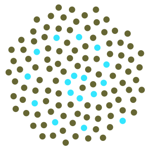

A satellite conference of Statphys 24.
26 – 28 July, 2010, Melbourne, Australia.
We are very pleased to acknowledge the financial support of our sponsors:
|  | ARC Centre of Excellence for Mathematics and Statistics of Complex Systems (MASCOS) |
 | Australian Mathematical Sciences Institute (AMSI) |
Keynote speakers
| David Landau |
| Alan Sokal |
About
This conference is intended to be broad in scope, with speakers from across the field of statistical physics discussing the application of Monte Carlo algorithms to their problems. The connecting thread will be insights into why a given algorithm is powerful for studying a particular physical system, with the hope that these ideas might be relevant to other physical systems.It is a satellite conference for Statphys 24, which will be held from 19 – 23 July, 2010, in Cairns, Australia.
Other satellite conferences can be found by clicking on the appropriate link on the Statphys 24 web-site. In particular, you may be interested in attending Statistical Physics of Lattice Polymers, which will be held in Melbourne from 7 – 9 July, 2010.
Announcements
A provisional version of the schedule has been posted here.Updated accommodation option: we've added Rydges on Swanston to the list of hotels for which you can a University of Melbourne discount. See details.
We are listing abstracts as they are received.
Please visit our list of speakers, which is being regularly updated.
The conference fee has been set at AUD$100. The conference dinner will cost AUD$60; here are the details.
Registration and abstract submission deadlines have been extended to June 15. Be warned that abstracts will be processed on a first come, first served basis, and so if the program becomes full we cannot guarantee that your abstract will be accepted for a talk. Please submit your registration form at the same time. Please visit the registration page, and submit your abstract via email to mcalgorithms@gmail.com.
Accommodation details have now been added to this site.
Please contact the organisers if you are interested in attending the conference, or would just like to find out more.